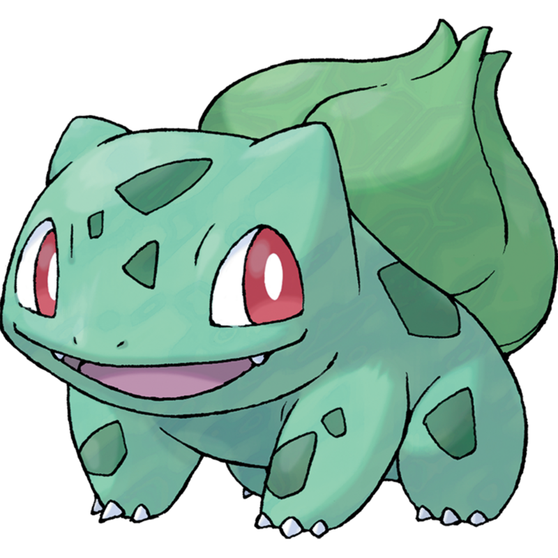
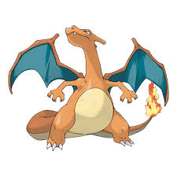

vi dico qualcosa in più sui pokemon.
nel cartone animato questi animaletti vengono catturati e allenati da degli umani che poi li usano uno contro l'altro in tornei per poter vincere delle medaglie.
ci sono vari tipi di pòkemon: d'aria,d'acqua,di terra,magnetici...
i pokemon preferiti di ares e ludovico sono i seguenti:
Charmander
pikachu 
bulbasaur 
squirtle 
diglett 
charizard 
snorlax 
trhoh
magmar